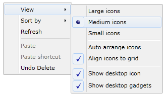

The steps to create ContextMenuAdv by using Visual Studio in C#are:
1. Open Visual Studio.
2. On the File menu click New -> Project. This opens the New Project Dialog box.

Figure 879: New Project Dialog box
3. In the Project Dialog window, select Silverlight application and in the name field type the name of the project and then click OK.

Figure 880: New Project
4. Add the following reference with the sample project:
· Syncfusion.Shared.Silverlight.dll

Figure 881: Solution Explorer
5. Click and open C# file and add the ContextMenuAdv to your application.
Here is the code to create ContextMenuAdv using C#.
|
//Creating ContextMenu ContextMenuAdv contextMenu = new ContextMenuAdv(); //Creating ContextMenuItems ContextMenuItemAdv menuItem1 = new ContextMenuItemAdv() { Header = "View" };
ContextMenuItemAdv subMenuItem1 = new ContextMenuItemAdv() { Header = "Large icons", IsCheckable = true, CheckIconType = Syncfusion.Windows.Shared.CheckIconType.RadioButton, GroupName = "group1" }; ContextMenuItemAdv subMenuItem2 = new ContextMenuItemAdv() { Header = "Medium icons", IsCheckable = true, CheckIconType = Syncfusion.Windows.Shared.CheckIconType.RadioButton, IsChecked = true, GroupName = "group1" }; ContextMenuItemAdv subMenuItem3 = new ContextMenuItemAdv() { Header = "Small icons", IsCheckable = true, CheckIconType = Syncfusion.Windows.Shared.CheckIconType.RadioButton, GroupName = "group1" };
ContextMenuItemAdv subMenuItem4 = new ContextMenuItemAdv() { Header = "Auto arrange icons", IsCheckable = true, CheckIconType = Syncfusion.Windows.Shared.CheckIconType.CheckBox }; ContextMenuItemAdv subMenuItem5 = new ContextMenuItemAdv() { Header = "Align icons to grid", IsCheckable = true, CheckIconType = Syncfusion.Windows.Shared.CheckIconType.CheckBox };
ContextMenuItemAdv subMenuItem6 = new ContextMenuItemAdv() { Header = "Show desktop icon", IsCheckable = true, CheckIconType = Syncfusion.Windows.Shared.CheckIconType.CheckBox, IsChecked = true }; ContextMenuItemAdv subMenuItem7 = new ContextMenuItemAdv() { Header = "Show desktop gadgets", IsCheckable = true, CheckIconType = Syncfusion.Windows.Shared.CheckIconType.CheckBox, IsChecked = true }; //Adding Items to another ContextMenuItem menuItem1.Items.Add(subMenuItem1); menuItem1.Items.Add(subMenuItem2); menuItem1.Items.Add(subMenuItem3); menuItem1.Items.Add(new SeparatorAdv()); menuItem1.Items.Add(subMenuItem4); menuItem1.Items.Add(subMenuItem5); menuItem1.Items.Add(new SeparatorAdv()); menuItem1.Items.Add(subMenuItem6); menuItem1.Items.Add(subMenuItem7); //Creating ContextMenuItems ContextMenuItemAdv menuItem2 = new ContextMenuItemAdv() { Header = "Sort by" }; ContextMenuItemAdv subMenuItem8 = new ContextMenuItemAdv() { Header = "Name" }; ContextMenuItemAdv subMenuItem9 = new ContextMenuItemAdv() { Header = "Size" }; ContextMenuItemAdv subMenuItem10 = new ContextMenuItemAdv() { Header = "Item type" }; ContextMenuItemAdv subMenuItem11 = new ContextMenuItemAdv() { Header = "Date modified" }; //Adding Items to another ContextMenuItem menuItem2.Items.Add(subMenuItem8); menuItem2.Items.Add(subMenuItem9); menuItem2.Items.Add(subMenuItem10); menuItem2.Items.Add(subMenuItem11); //Creating ContextMenuItems ContextMenuItemAdv menuItem3 = new ContextMenuItemAdv() { Header = "Refresh" }; ContextMenuItemAdv menuItem4 = new ContextMenuItemAdv() { Header = "Paste", IsEnabled = false }; ContextMenuItemAdv menuItem5 = new ContextMenuItemAdv() { Header = "Paste shortcut", IsEnabled = false }; ContextMenuItemAdv menuItem6 = new ContextMenuItemAdv() { Header = "Undo Delete" }; //Adding Items to another ContextMenuItem contextMenu.Items.Add(menuItem1); contextMenu.Items.Add(menuItem2); contextMenu.Items.Add(menuItem3); contextMenu.Items.Add(new SeparatorAdv()); contextMenu.Items.Add(menuItem4); contextMenu.Items.Add(menuItem5); contextMenu.Items.Add(menuItem6); //Setting ContextMenu to control ContextMenuAdvService.SetContextMenuAdv(this.LayoutRoot, contextMenu); |

Figure 882: ContextMenuAdv